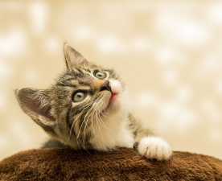

Prohlídněte si naše mazlíčky

Felix
Malé ušaté torpédo, které udělá radost především malým dětem. Přijďte se na nějpodívat!

Rosalinda
Přítulná kočička, která má ze všeho nejradši konzervy Whiskas, ale nepohrdne ani Friskies.

Fousek
Je to sice trochu lenoch, ale když se ve 3 ráno probudí, tak nestačíte zírat, jak rychle se probudíte.

Kira
Vždycky s hlavou v oblacích a drápky, které nikomu nic nedarují. To je tato kočka.

Sus
Tento nečekaný kočkopes překvapí každého, kdo se na něj přijde podívat.

Ušisko
Sametová srst, sociální pohledy a dokonalé tlapky. To všechno definuje toto kotě.